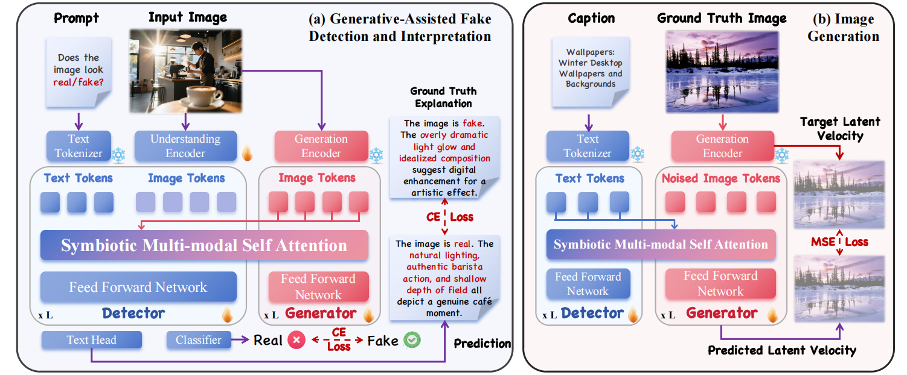
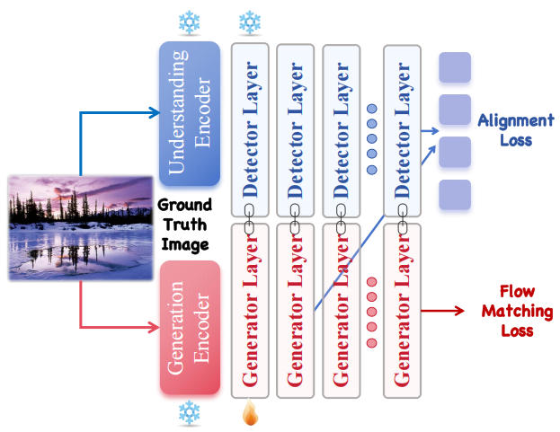
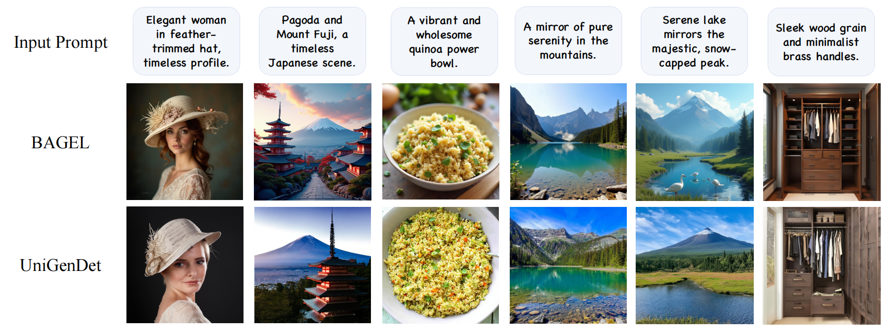
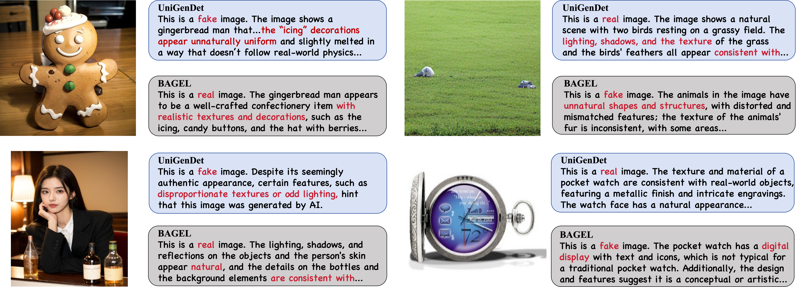
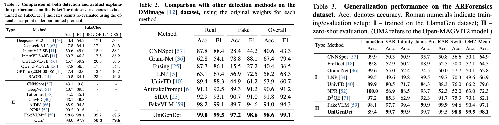
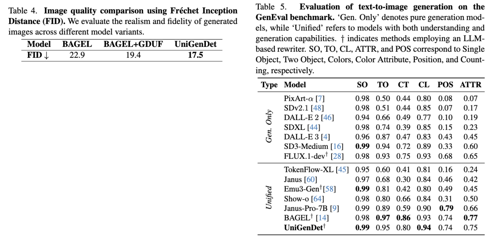

UniGenDet: A Unified Generative-Discriminative Framework for Co-Evolutionary Image Generation and Generated Image Detection
CVPR 2026
Abstract
Key Contributions
Framework design and methodological highlights
These contributions establish a novel paradigm for bridging image generation and detection, effectively mitigating the traditional lag between generative model advances and detection capabilities.
Method Overview
Two main modules: GDUF and DIGA


Stage I — GDUF (Generation-Detection Unified Fine-tuning). We build upon a unified generation-understanding model and fine-tune it on both generation data and detection-with-explanation data. For detection, the Symbiotic Multi-modal Self-Attention (SMSA) lets the detector attend to generator-side latents together with visual/text features, enabling accurate real/fake prediction and more grounded artifact explanations. For generation, discriminative cues from the detector are injected as conditions, making synthesis more aligned with authenticity criteria.
Stage II — DIGA (Detector-Informed Generative Alignment). After obtaining a strong detector, we freeze it and use it as an authenticity teacher to guide the generator. Specifically, DIGA aligns generator intermediate features to the detector's representation of real images (cosine-similarity feature alignment), combined with the flow matching objective. This forms an explicit feedback loop: the generator is pushed away from detector-sensitive (easily detectable) feature subspaces, improving realism while keeping the base generative capability.
Qualitative Visualizations
Generation and detection comparisons


Quantitative Results
Detection and generation metrics explained


Overall, quantitative results confirm the effectiveness of the co-evolutionary framework. Detection accuracy, F1, semantic consistency scores, and FID collectively indicate that UniGenDet successfully balances both tasks, offering state-of-the-art performance in generation realism and forensic detection.
BibTeX
@inproceedings{zhang2026unigendet,
title = {UniGenDet: A Unified Generative-Discriminative Framework for Co-Evolutionary Image Generation and Generated Image Detection},
author = {Zhang, Yanran and Zheng, Wenzhao and Li, Yifei and Yu, Bingyao and Zheng, Yu and Chen, Lei and Zhou, Jie and Lu, Jiwen},
booktitle = {Proceedings of the IEEE/CVF Conference on Computer Vision and Pattern Recognition (CVPR)},
year = {2026}
}
@article{zhang2026unigendet,
title = {UniGenDet: A Unified Generative-Discriminative Framework for Co-Evolutionary Image Generation and Generated Image Detection},
author = {Zhang, Yanran and Zheng, Wenzhao and Li, Yifei and Yu, Bingyao and Zheng, Yu and Chen, Lei and Zhou, Jie and Lu, Jiwen},
journal = {CoRR},
volume = {abs/2604.21904},
year = {2026},
url = {https://arxiv.org/abs/2604.21904},
}